Wisp Science基础入门：模型配置
查看原文
第一次打开 Wisp Science，很多人会停在同一个地方：我已经有一个 AI 账号了，为什么还要填写 API 地址和密钥？模型名称该填什么？保存后，又怎样知道这次对话真的用上了它？
Wisp Science 把科研工作区与模型接入分开管理。你可以保留同一个项目中的文件和分析记录，再按需要选择能够访问的模型。这篇文章从第一次接入讲起，先完成一个能正常回答的小任务，再认识图片能力和会话切换。
本文配图来自 Wisp Science 实际前端，使用演示配置和教学会话。图中的模型列表不代表推荐顺序，也不表示已经验证了某个账号的访问权限；请以自己的服务商提供的配置为准。
先分清三件事：Wisp、模型服务和 API 密钥。
| 组成部分 |
负责什么 |
你需要准备什么 |
| Wisp Science |
管理项目、组织对话与工具调用、保存工作记录 |
安装应用并打开一个项目 |
| 模型服务 |
接收请求，生成回答或工具调用 |
可访问的服务地址、支持的协议和模型 ID |
| API 密钥 |
让服务商识别这次请求使用的账号或额度 |
服务商控制台提供的 API Key |
网页登录账号、聊天订阅和 API 使用权限可能采用不同的开通方式。能在某个网站聊天，并不一定意味着已经有可供 Wisp 使用的 API 密钥。开始前，先确认你拿到的是 API 接入信息。
如果实验室提供统一网关，也可以使用管理员给出的地址、模型 ID 和密钥。不要把网页聊天地址填进 API 地址栏。
打开模型设置，先看自己是否已有可用配置。
进入 设置 → 模型。这里可以查看已有模型，也可以点击 添加 API 接入。首次引导中的模型配置是另一个起点；跳过引导后，仍可以随时回到这里补充。
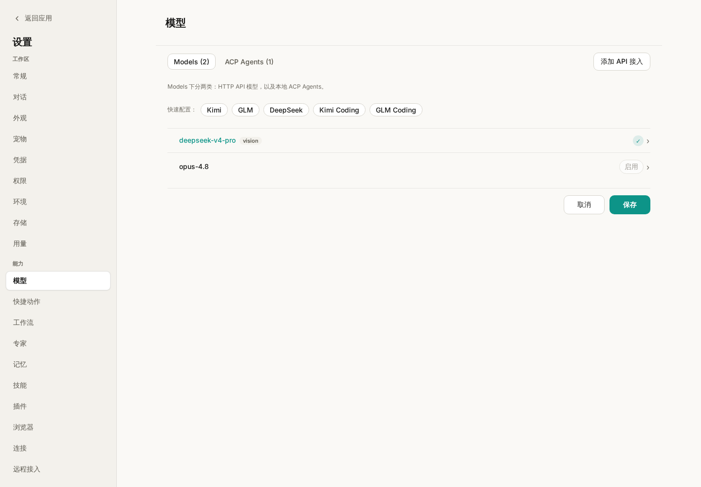
图 1：先检查已有模型。显示名称便于自己区分用途，实际调用仍依赖模型 ID、协议和地址。
这个页面也有 ACP Agents 分类，用来接入外部 Agent 进程。本文先介绍 Wisp 内置 Agent 使用的 HTTP API 模型。手里拿到的是命令行启动命令时，应查看 ACP 配置说明。
添加 API 接入，先填写共用信息，再添加模型。
点击 添加 API 接入，先填写服务商给出的 Base URL 和 API 密钥，然后在下方填写这把密钥可以调用的模型。一组接入可以添加多个模型，每个模型分别选择协议、模型 ID 和能力。
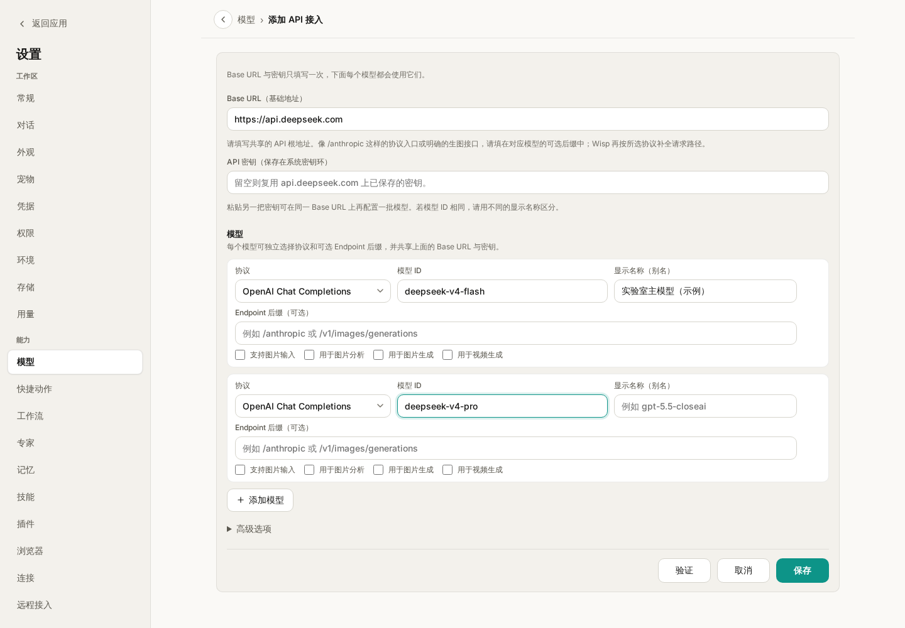
图 2：同一次添加中的模型共用地址和密钥。截图仅演示字段位置，密钥没有填写。自动建议的模型也要与自己的账号权限核对。
首次接入时，优先把下面几项填准确：
| 字段 |
怎样填写 |
容易混淆的地方 |
| Base URL |
服务商提供的 API 基础地址 |
通常不要自行追加 /v1/chat/completions 等完整接口路径 |
| API 密钥 |
服务商控制台生成的密钥 |
不要填写网页登录密码 |
| 协议 |
按服务商说明选择 OpenAI 兼容、OpenAI Responses 或 Anthropic |
“OpenAI 兼容”是一种接口格式，也可由其他服务商提供 |
| 模型 ID |
服务实际接受的精确名称 |
显示名称可以自定义，模型 ID 不能随意起名 |
| 显示名称 |
便于识别的名称，例如“实验室主模型” |
不会改变实际调用的模型 |
| 端点后缀 |
服务商明确要求的额外路径 |
一般先留空，不要把完整接口路径反复拼接 |
如果不确定协议和地址是否配套，把这两个字段一起与服务商文档核对。不要一遇到报错就轮流追加 /v1、/responses 和 /messages。
首次使用这组地址时，需要提供有效密钥。已经为相同 Base URL 保存过密钥时，留空可以复用已有密钥；粘贴另一把密钥，可以为新的模型组建立独立接入。同一个模型使用不同账号时，建议设置不同显示名称，便于在对话中识别。
Wisp 把 API 密钥放在操作系统密钥环中。截图、项目笔记和发给同事的配置说明里，只保留地址、协议和模型 ID，不要附上真实密钥。
填写完成后，点击 验证，再按结果核对配置；验证成功后仍需点击 保存。以后也可以打开已保存模型的编辑页重新验证。验证通过说明对应检查成功，具体的工具调用或图片任务仍需要各自试用。
输出长度和上下文窗口，先使用有依据的数值。
接入保存后，点击模型列表中的具体模型，可以在编辑页调整输出长度、上下文窗口和推理等设置。
“最大输出 tokens”约束一次回答最多生成多少内容；“上下文窗口”描述模型能够处理的输入与输出总范围。它们不是填得越大，模型能力就越强。
Wisp 对内置模型目录能够精确识别的模型，会带出已记录的上限。目录没有识别到自定义别名或网关模型时，需要按服务商说明填写。最大输出超出已知上限时，保存会提示错误；上下文窗口超过已知上限时会被收回上限。
推理强度、Fast 模式等选项也依赖模型和服务商支持。第一次接入可以保留默认，先确认普通对话成功，再根据实际任务调整。Fast 模式可能影响额度消耗，开启前查看所用服务的说明。
回到对话，明确选择这次要用的模型。
打开一个新会话，在输入框附近的模型选择器中选择刚保存的模型。
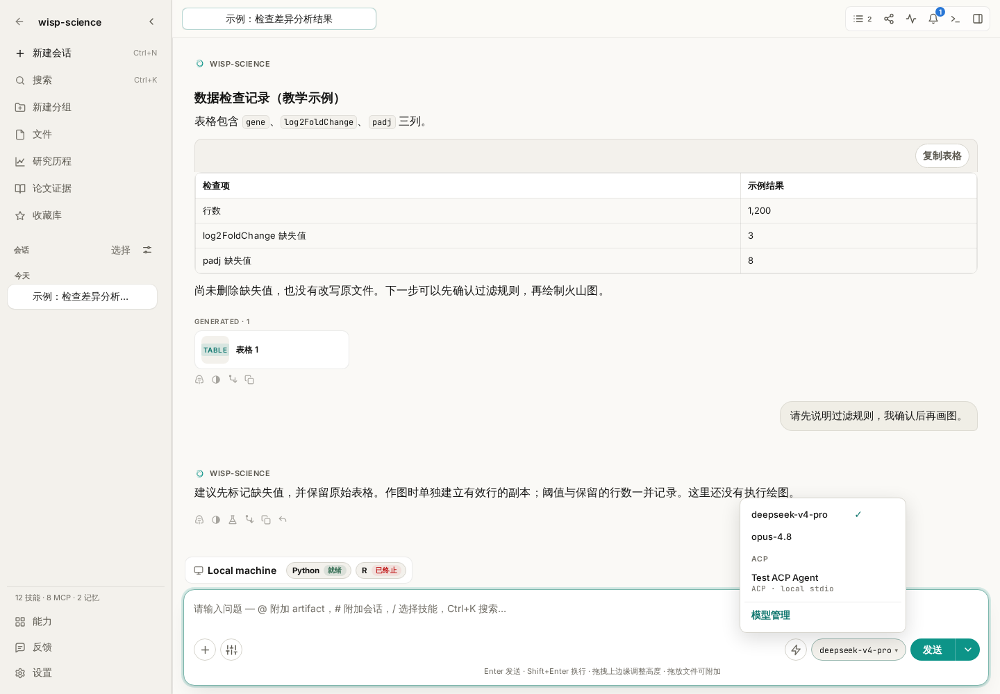
图 3：这里决定当前会话使用的模型。已有消息的会话切换模型时，会出现确认提示；设置中的默认模型用于新会话。
先发送一条不依赖网络和科研工具的小问题：
请用三句话解释 CSV 文件是什么，再给出一个两行数据的 CSV 示例。此次不需要读取文件或访问网页。
这样比较容易区分“模型是否能回答”和“外部工具是否配置成功”。收到正常回答后，再尝试读取自己项目中的一个小文件。
不要只问“你是什么模型”来验证配置。模型在自然语言中的自我描述不能替代实际配置记录；应检查选择器显示的模型，并结合该轮的轨迹与用量记录核对。
已有内容的会话切换模型，会影响这个会话后续的请求；一轮已经发出的请求仍使用启动时的配置，新配置从后续轮次生效。
需要读图时，再检查图片输入和图片分析角色。
科研任务经常包含显微图片、截图或统计图。模型能回答文字，不代表它能接收图片。
- 使用支持视觉输入的聊天模型时，勾选 支持图片输入。
- 希望它也为非视觉主模型解释图片时，再指定 用于图片分析。
- “用于图片生成”是另一个角色，负责产出图像，不能代替图片分析配置。
可以上传一张没有敏感信息、标注清晰的简单图，发送：
请只描述这张图中能看见的坐标轴、图例和变化趋势。看不清的文字请明确说明，不要补写实验条件，也不要推断因果关系。
先验证可见信息，再进入具体科研判断。如果选择的主模型不能读图，也没有可用的图片分析模型，先补齐配置，再重试。
遇到报错，先从出错的位置排查。
| 现象 |
优先检查 |
| 401 / 403 |
密钥是否有效、API 权限是否开通、账号能否访问该模型 |
| 404 或返回网页内容 |
Base URL、协议与模型 ID 是否正确；是否误填了服务首页 |
| 超时或连接失败 |
网络连通性，以及 设置 → 常规 → 网络 中的模型 API 代理 |
| 验证通过，某个任务仍失败 |
该模型是否支持任务所需的工具调用、图片输入或输出长度 |
| 上下文超限 |
尝试 /compact，或开新会话并说明需要延续的任务 |
| 回答中途截断 |
核对最大输出设置，必要时使用“继续执行”或缩小本次任务 |
第一次配置的目标可以很小：保存一组接入，在新会话中选择它，得到一条完整回答。这个环节跑通后，再接着学习 MCP、Skills 和浏览器使用，就更容易判断后续问题出现在哪一层。
功能细节参见 Wisp 模型配置文档。本文依据撰写时的项目实现整理，不同版本的界面文字可能略有差异；示例提示词不代表已经执行的模型请求。
返回教程目录
Wisp Science基础入门：浏览器使用
查看原文
查文献时，数据库记录往往只是起点。我们还需要打开期刊网页，看看补充材料放在哪里，确认数据下载入口，或者阅读一个没有专用检索工具的网站。
Wisp Science 可以通过浏览器桥接扩展读取和操作网页。你可以让它在已有浏览器页面上继续工作，查看它实际打开了什么，再把需要的内容整理进项目。这篇文章先完成一次公开网页读取，再介绍标签管理、人工验证和下载。
本文的 Wisp 配图来自实际前端，使用教学会话和模拟浏览器事件；扩展安装图展示 Chrome 的操作入口。图中的网页标题与任务状态用于说明界面，不代表已经执行了联网检索。
先认识浏览器控制：模型的回答，需要有实际页面作为依据。
浏览器控制可以帮助 Wisp 打开网页、读取页面文字、查找可操作元素，以及在任务需要时截图或保存网页资源。对于有专门连接器的数据库，也可以使用 MCP 取得结构化记录；两种方式可以用于同一个科研任务。
日常使用时，Wisp 默认连接你已有的 Chrome/Chromium 类浏览器资料，因此可以沿用该资料中的登录状态。登录了哪个账号、当前打开了哪些标签，会影响可读取的内容。
Wisp 也有单独的工作浏览器模式，使用独立资料，需要在其中另行登录，并且依赖支持该启动方式的浏览器版本。第一次使用，先把日常浏览器的连接跑通即可；独立模式的区别见浏览器运行时说明。
第一次连接，从“配置浏览器控制”开始。
先保持 Wisp 运行，在会话中发送：
请帮我配置浏览器控制，告诉我当前连接状态和这台电脑上应该加载的扩展目录。
Wisp 会通过 browser_setup 返回状态和准确路径。接着在准备交给 Wisp 使用的 Chrome 资料中操作：
- 打开
chrome://extensions。
- 开启右上角 开发者模式。
- 点击 加载已解压的扩展程序；不同版本也可能显示“加载未打包的扩展程序”。
- 选择 Wisp 返回的整个
browser-extension 文件夹。
- 打开扩展弹窗，确认出现 Connected to Wisp。

图 1：加载的是整个扩展目录，不是 ZIP，也不是目录中的某个文件。路径以自己电脑上的 Wisp 返回值为准。
不要照抄别人的 Windows、macOS 或 WSL 路径。Wisp 会准备稳定的受管目录，浏览器需要记住的就是这个实际路径。
如果扩展弹窗显示已连接，但 Wisp 仍报告不可用，再次要求它检查浏览器状态。可能存在旧扩展版本、连接到了其他占用相同端口的工具，或握手未完成等情况，应该依据返回的具体原因处理。
先读一个公开页面，确认回答来自实际访问。
可以发送下面这条任务：
请打开 https://example.com ，读取网页标题和主要段落。告诉我实际读取的网址；如果没有成功读取，请说明失败原因，不要用已有知识补写网页内容。
这个页面内容简单，适合检查基本连接。确认能打开和读取后，再换成你熟悉的期刊或数据库页面。
科研任务可以进一步写清楚“看什么、取什么、存在哪里”：
请阅读我当前打开的论文页面，找出数据可用性声明和补充材料入口。列出页面上实际出现的数据编号、链接和对应说明，保存为 notes/paper-links.md。暂时不要下载大型数据，也不要提交任何表单。
检查结果时，把 Wisp 的回答与浏览器页面对照。需要追查执行过程时，打开轨迹，查看调用了什么工具、读取了哪个地址，以及有没有失败后重试。
浏览器设置里，有两类与日常使用直接相关的选项。
进入 设置 → 浏览器，可以管理自动打开浏览器、标签清理和网址名单。
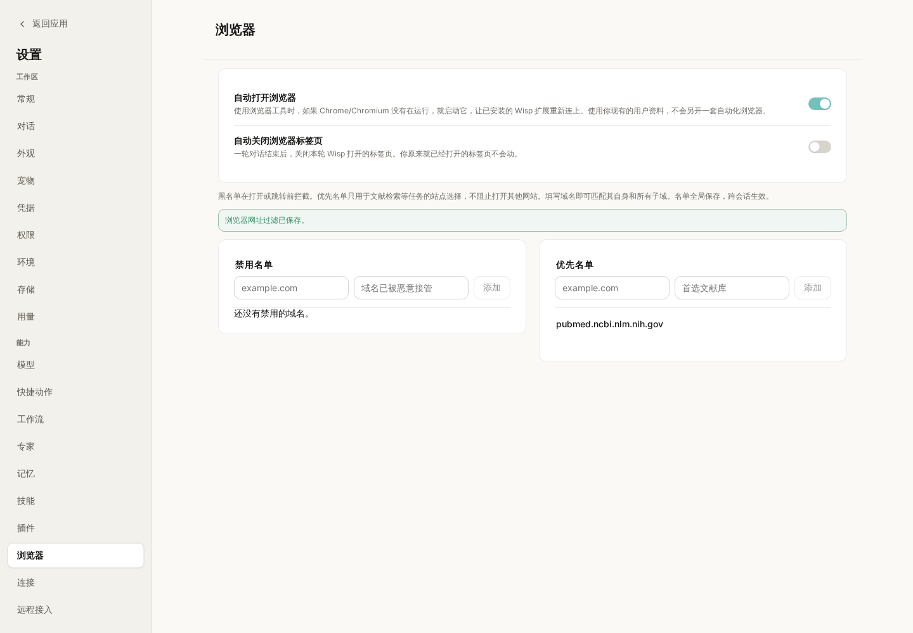
图 2：演示中把 PubMed 加入优先名单。优先名单提供站点偏好，不会把其他网站全部禁止。
| 选项 |
有什么作用 |
| 自动打开浏览器 |
需要使用浏览器工具时，尝试启动已安装的受支持浏览器，让扩展重新连接；默认开启 |
| 自动关闭浏览器标签页 |
一轮结束后清理本轮 Wisp 新开的标签；默认关闭 |
| 禁用名单 |
对命中的域名及其子域，阻止相应的新开页面或明确跳转，并返回填写的原因 |
| 优先名单 |
指导检索优先使用这些站点，名单外站点仍可访问 |
名单按域名设置，不能代替检查具体网页内容。禁用一个域名也不等于清除了浏览器里已经打开的页面；已打开标签仍可能被扫描读取。
一轮结束后，决定哪些标签值得留下。
未开启自动关闭时，Wisp 会列出本轮自己打开的标签，让你选择关闭哪些、保留哪些。已经由你打开的标签不在这次清理范围中。
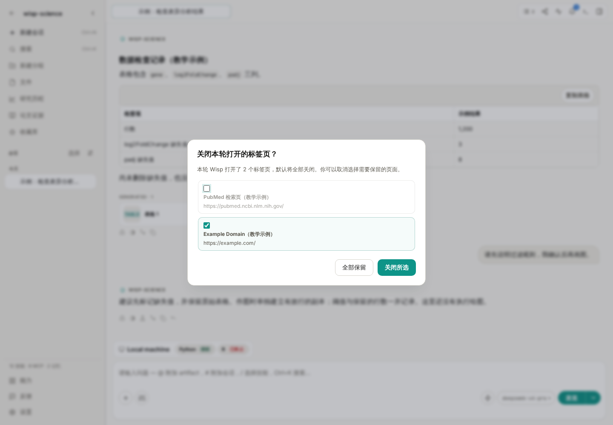
图 3：示例中取消勾选 PubMed 页面，表示希望保留它继续查看。勾选的标签才会被这次确认关闭。
可以保留还要核对的论文页面，把临时检索页清理掉。按 Escape 可以先关闭提示，不必为了返回会话而把页面一起关掉。
如果一轮结束时扩展断开，待处理的标签列表会保留，重新连接后再处理。需要人工验证的标签会受到保护，不会被当作普通任务标签自动清理。
遇到登录或真人验证，回到浏览器亲自完成。
某些网站需要登录，或者会显示“确认你是真人”。Wisp 检测到人工验证时，会暂停相应自动化并提示你处理。
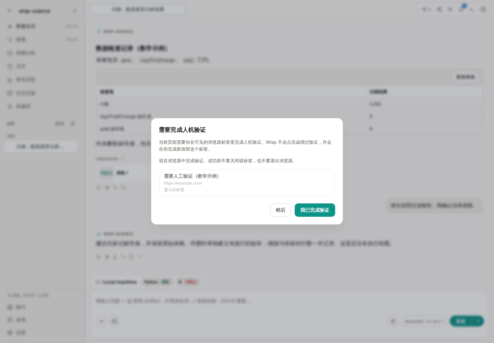
图 4：这张图使用模拟事件展示提醒。验证需要你在实际网页中完成；Wisp 会重新检查页面状态后再继续。
处理顺序是：打开提示指向的标签，手动完成验证，保持页面打开，再回到 Wisp 确认。若验证还没通过，先查看浏览器页面，不要反复要求 Agent 点击验证码。
下载材料时，把网页操作和文件保存位置说清楚。
可以先让 Wisp 列出文件名称、链接和大小，再决定是否下载。例如：
请先找出这篇论文的补充表格，列出文件名、下载链接和页面标注的大小。先不下载，等我确认需要哪些文件。
如果浏览器弹出系统“另存为”窗口，需要你处理。网页桥接不能操作系统文件选择器，也不能代替你点击浏览器工具栏中的下载气泡。
确实需要无人值守下载时，可以手动调整浏览器的下载设置，关闭“下载前询问每个文件的保存位置”。多文件自动下载的权限应按具体站点设置。下载完成后，再让 Wisp 检查实际落盘的文件位置与大小；不要把“点击了下载链接”当作“已经取得完整文件”。
遇到问题，可以按连接、页面和文件三个位置检查。
| 现象 |
优先检查 |
| 提示浏览器未连接 |
Wisp 是否运行、是否打开了安装扩展的那份浏览器资料 |
| 升级 Wisp 后要求更新扩展 |
按更新横幅刷新扩展；旧版本可能需要在扩展管理页手动重新加载 |
| 浏览器已连接，却读不到内容 |
页面是否加载完成、是否需要登录或人工验证 |
| 无法操作浏览器设置页 |
chrome://settings 等内部页面需要手动操作 |
| 下载没有结束 |
是否停在系统保存窗口、站点下载许可或失败的网络请求 |
| 回答没有来源网址 |
查看轨迹，确认是否发生了成功的页面读取，再要求按实际结果补充来源 |
第一次练习，完成“读一个公开页面、核对网址、保留需要的标签”就够了。熟悉连接和检查方式后，再把论文、数据入口和补充材料逐步放进同一条任务中。
功能细节参见 Wisp 真实浏览器自动化文档。本文依据撰写时的项目实现整理，不同版本的界面文字可能略有差异；示例提示词不代表已经执行的网页操作。
返回教程目录
Wisp Science基础入门：服务器配置和命令行
查看原文
做科研时，文件和计算往往不在同一台电脑上：日常在笔记本里读文献，数据放在实验室服务器，分析需要远程的 Python、R 或 GPU。切换机器时，最容易弄混的是“我现在在哪台机器上”和“这条路径属于哪里”。
Wisp Science 可以登记服务器，把计算环境附加到对话，也能打开交互终端，让你亲自检查目录和命令。这篇文章从添加一台 SSH 主机开始，再介绍应用里的终端与独立 Wisp 命令行。
本文配图来自实际前端，服务器、GPU 信息和终端状态使用演示数据。示例主机 gpu.example.org 不能当作真实服务器连接；截图不代表已经访问了某台远程主机。
先分清三个入口，避免把它们当成同一件事。
| 入口 |
谁来操作 |
适合做什么 |
| 对话中的计算环境 |
你描述任务，Wisp 在指定环境调用工具 |
读取远程数据、运行分析、提交结构化任务 |
| Wisp 内的交互终端 |
你输入命令，终端直接执行 |
检查目录、调试环境、查看程序输出 |
独立 wisp-science CLI |
在系统终端中与 Wisp 对话或发起单次任务 |
不打开桌面窗口，在当前目录使用 Agent |
服务器配置解决“Wisp 可以使用哪台机器”，终端解决“我要亲自输入什么命令”，独立 CLI 则是另一种使用 Wisp 的入口。
添加服务器前，先准备连接信息。
向管理员确认主机地址、账号、SSH 端口和认证方式。如果需要 VPN、跳板机或特定 SSH 配置，也先按实验室要求准备好。
一个示例对应关系是：
| 信息 |
示例 |
说明 |
| 名称／别名 |
gpu-lab |
在 Wisp 中识别服务器的名称 |
| 主机地址 |
gpu.example.org |
换成管理员提供的真实地址 |
| 用户 |
researcher |
远程账号，不一定与本机用户名相同 |
| 端口 |
22 |
以服务器实际配置为准 |
| 私钥文件 |
~/.ssh/id_ed25519 |
填本机文件路径，不粘贴私钥正文 |
如果你已经能在系统终端通过 ssh 登录，会更容易确认这些字段。首次出现主机密钥提示时，按管理员提供的指纹核对；不要把关闭主机校验作为常规配置步骤。
进入设置，把服务器登记为一个环境。
打开 设置 → 环境 → 添加 SSH 主机，填写连接信息。认证方式按服务器要求选择“密钥 / agent”或密码。
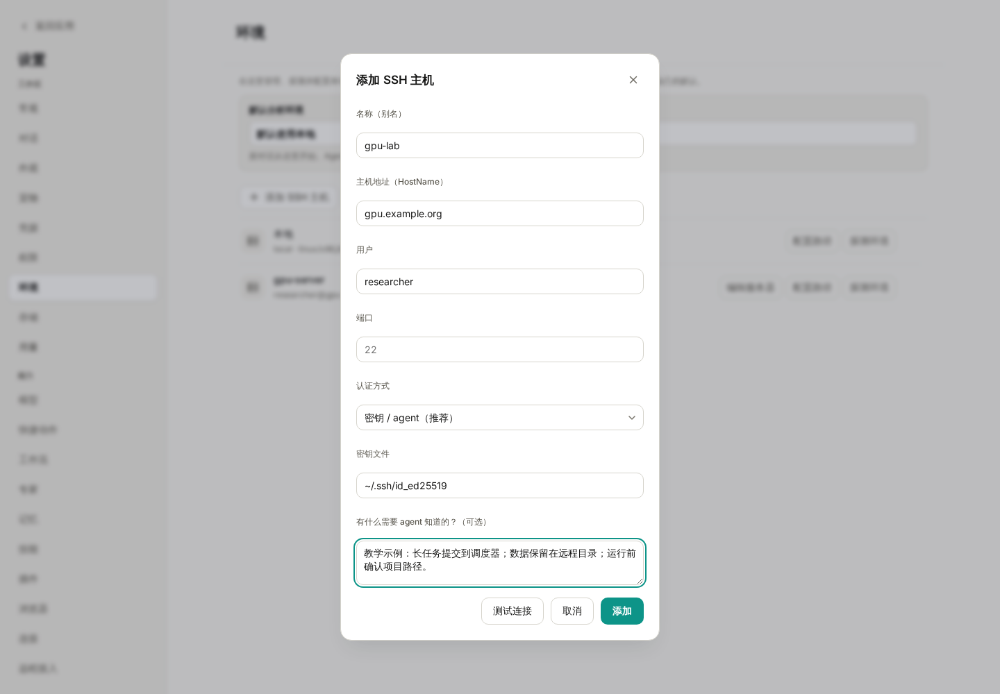
图 1：这里的地址与账号都是教学占位值。“给 Agent 的说明”适合记录使用约定，不适合保存密码或密钥。
“给 Agent 的说明”可以写成一段具体规则：
这台服务器用于本项目分析。运行前先确认远程目录；大型原始数据保留在服务器。耗时计算按管理员要求提交到调度器，记录脚本、参数、任务编号和结果路径，不在登录节点长时间计算。
点击 测试连接，确认成功后添加。回到环境列表，再使用 探测环境 检查操作系统、Python、R、GPU 和调度器等信息。
“能登录”和“分析环境已准备好”是两项检查。测试连接通过后，如果探测不到 Python 或 R，先确认解释器是否安装、是否在远程 PATH 中。需要指定位置时，使用 配置运行时解释器 填写远端可执行文件路径。
已经维护 ~/.ssh/config 时，也可以使用导入入口登记其中的主机，再逐台测试与探测。密钥文件内容不会被复制进 Wisp 的 SQLite；密码类敏感值走系统密钥环。
把环境加入当前会话，再说明数据在哪里。
回到对话，打开输入框左下角 Agent 选项 → 计算环境，将目标服务器加入当前会话。右侧 环境 面板也提供附加服务器的入口。
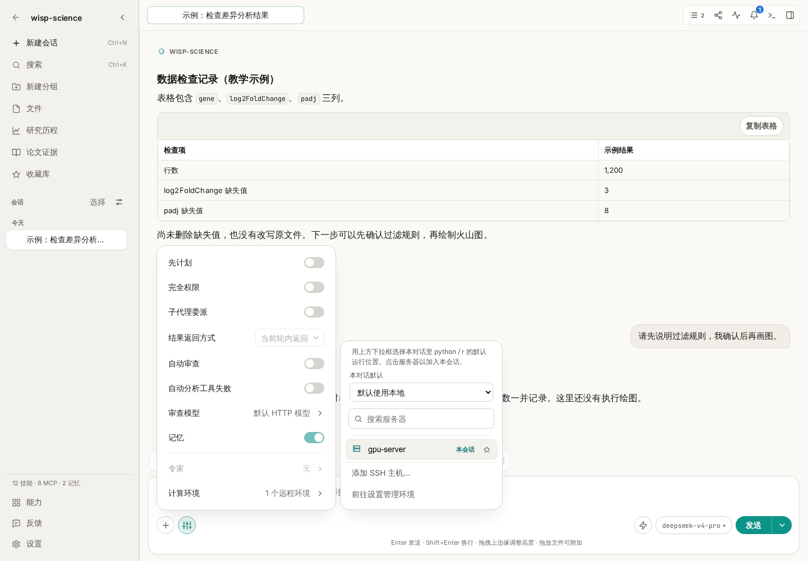
图 2：示例中的 gpu-server 是预置演示主机。服务器是否加入本会话，与它是否被选作默认分析环境，是两个需要分别检查的状态。
默认环境有两层：
- 设置 → 环境 中的全局默认，为新对话提供起点。
- 当前对话的 计算环境 菜单，可以单独指定这段对话的默认环境。
修改全局默认不会改写已经创建的对话。刚开始使用时，在任务里明确写出服务器名称和远程路径，比仅依赖默认值更容易核对：
请在已附加的 gpu-lab 上检查 /data/project-a/counts.csv 是否存在，报告文件大小和前五行。先告诉我实际使用的执行环境，不下载完整文件，也不修改它。
这里的 /data/project-a/counts.csv 是远程路径。本机项目中的 data/counts.csv 不会因为附加了服务器就自动变成同一个文件。需要传输时，明确源机器、源路径和目标位置；大数据也可以一直保留在远端，只取回小型结果或元数据。
想亲自检查目录，可以打开交互终端。
打开右侧 环境 面板，在目标环境卡片上点击 打开终端。终端会显示在会话下方，标签上可以看到它对应的环境。
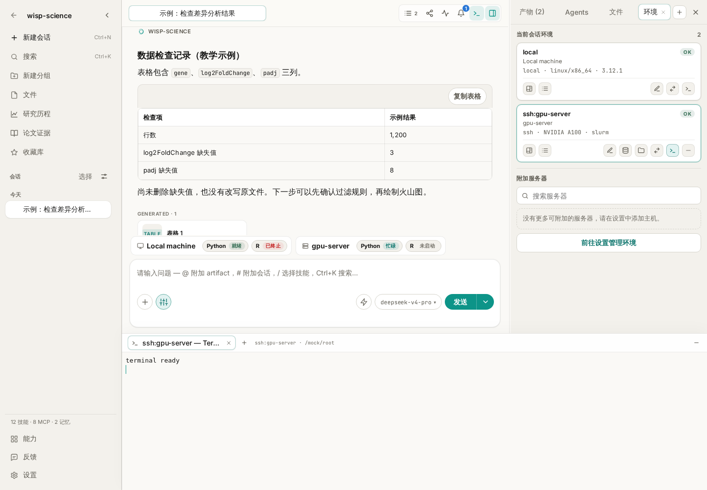
图 3：终端与对话保留在同一个窗口中。这里的“terminal ready”来自测试替身，用于展示位置，不代表真实 SSH 登录结果。
在 Linux/macOS 或远程 Linux shell 中，可以先执行只读检查：
hostname
pwd
ls -lh
它们分别帮助确认机器名称、当前目录和目录内容。SSH 终端初始位置通常是远程用户的主目录，不是本机项目目录；需要分析项目文件时，先进入对应的远程目录。
Windows 本地终端默认使用 PowerShell，可以用：
hostname
Get-Location
Get-ChildItem
一个环境可以打开多个终端标签。切换标签或折叠终端面板，会保留运行中的终端；关闭某个标签会终止对应终端进程。终端标签和滚动记录不会随应用重启恢复，也不作为项目同步内容保存。
耗时计算，要留下可以继续检查的任务记录。
交互终端适合调试，但一项需要跑几小时的分析，还需要状态、取消入口、日志和产物位置。可以让 Wisp 使用结构化 Run 管理任务，而不是在普通 shell 调用里一直等待：
请先检查 gpu-lab 上的运行环境，并为 analysis/run_qc.py 准备运行方案。列出输入路径、输出目录和资源要求，等我确认后，通过结构化 Run 提交；如果这台机器要求使用调度器，请遵守它的提交方式，并记录任务编号。
只有环境和任务方式都匹配时再提交。登记了一台 GPU 主机，并不意味着每个脚本会自动使用 GPU；附加服务器也不会自动把任意命令转换成调度器作业。
需要复盘时，结合 Run 状态、日志、输出文件和轨迹判断结果。仅有终端中的“命令已发送”不能证明计算成功结束。
独立 Wisp CLI，从当前目录开始工作。
如果已经构建或安装了独立 CLI，并且 wisp-science 在 PATH 中，可以在项目目录运行它。桌面应用已安装，不一定意味着这个命令已经加入了系统 PATH。
CLI 使用环境变量配置模型，不会自动把桌面密钥环里的配置变成终端环境变量。以兼容接口为例，先把下面的占位内容换成自己的实际信息。
macOS / Linux：
export WISP_PROVIDER="openai"
export WISP_API_URL="https://your-api.example.com"
export WISP_MODEL="your-model-id"
read -s WISP_API_KEY
export WISP_API_KEY
wisp-science
执行 read -s WISP_API_KEY 后，在终端输入密钥并回车，输入不会回显。示例中的 URL 和模型 ID 都是占位值；不要原样用于连接。
Windows PowerShell：
$env:WISP_PROVIDER = "openai"
$env:WISP_API_URL = "https://your-api.example.com"
$env:WISP_MODEL = "your-model-id"
$credential = Get-Credential -UserName "api" -Message "在密码字段输入 API Key"
$env:WISP_API_KEY = $credential.GetNetworkCredential().Password
wisp-science
WISP_PROVIDER 可按服务协议选择 openai、openai_responses 或 anthropic。在交互模式中，输入自然语言任务；/help 查看帮助，/new 开始新会话，/compact 压缩上下文，/quit 退出。
需要单次执行时，可以在项目目录运行：
wisp-science run "只读列出当前项目的顶层文件，并说明可能的数据、脚本和结果目录"
wisp-science run --output jsonl "只读检查 data/example.csv 的列名和缺失值"
jsonl 按行输出结构化事件，适合接入日志或脚本。它仍然会调用实际模型；命令能启动，并不代表示例路径存在或分析必然成功。
源码开发者可在仓库根目录使用 cargo run -p wisp-cli -- run "任务"。这种写法默认以当前仓库目录为工作区；要分析另一个目录中的项目，先构建 CLI，再到目标项目目录运行可执行文件。构建和更多参数见开发文档。
遇到问题，先确认机器，再确认命令。
| 现象 |
优先检查 |
| SSH 连接失败 |
地址、端口、账号、VPN／跳板机与认证方式 |
| 系统终端能登录，Wisp 探测失败 |
远程登录脚本、受限 shell，以及非交互命令能否执行 |
| 已添加服务器，对话用的还是本机 |
是否加入当前会话、当前会话的默认环境与任务指定是否一致 |
| 文件不存在 |
路径属于本机还是远程；终端当前目录是否正确 |
| Python／R 找不到包 |
实际调用的是哪个解释器，包是否装在同一环境 |
wisp-science 命令不存在 |
是否已构建／安装独立 CLI，PATH 是否包含可执行文件目录 |
| CLI 缺少模型密钥 |
环境变量是否在当前终端会话中设置，是否误以为它会继承桌面配置 |
第一次练习可以只完成四件事：测试连接、探测环境、把服务器加入对话、检查一个小文件。确认每一步都能说清“在哪台机器、读哪个路径、得到什么结果”，再开始真正的计算任务。
功能细节参见 Wisp 基础配置、交互终端说明和 CLI 开发文档。本文依据撰写时的项目实现整理，不同版本的界面文字可能略有差异；示例命令和提示词不代表已经执行的远程操作。
返回教程目录
Wisp Science基础入门：导入、导出与分享
查看原文
一项分析做完后，经常会遇到三个不同的需求：换台电脑继续整个项目，把某一次对话交给同事，或者只把一段结果发到组会群里。
Wisp Science 为这些需求提供了不同入口。选对导出范围，后续导入和阅读会方便很多。这篇文章按“整个项目 → 单个会话 → 部分消息”的顺序介绍，并说明每种方式能带走什么。
本文配图来自实际前端，使用演示项目和教学会话。表格中的数字、项目路径与联系人均为示例，不代表真实实验结果或已完成的迁移。
先决定要交付什么，再选择导出方式。
| 需求 |
选择什么 |
接收方怎样使用 |
| 换电脑继续整个项目 |
项目 ZIP |
在 Wisp 的“导入项目”中恢复 |
| 只交接一段完整会话及可导出的关联产物 |
会话 ZIP |
在目标项目中使用“导入会话归档” |
| 展示会话中的几条消息 |
分享为 PNG 长图或 HTML |
用图片查看器或浏览器阅读 |
| 检查完整执行过程 |
轨迹导出 HTML |
阅读调用、结果、耗时和用量记录 |
项目 ZIP 和会话 ZIP 虽然扩展名相同，内容格式和导入入口不同。分享 HTML 与轨迹 HTML 也是阅读材料，不能当作会话归档导回 Wisp 继续对话。
导出整个项目，适合迁移和完整交接。
先等当前项目的活动对话和任务结束。然后在项目卡片上点击 导出项目，也可以打开项目后使用 文件 → 导出当前项目。

图 1：只要普通文件时，可以自行复制项目文件夹；需要一起带走 Wisp 中的会话和项目记录时，选择完整 ZIP。
选择 导出 ZIP 和保存位置后，右下角会显示处理阶段、文件数量、大小和当前路径。等待导出完成，再复制生成的 ZIP。
导出期间，源项目会临时只读；其他项目仍可使用。不要把尚未完成或仍为空的目标文件发给接收方。
项目包包括工作区里的普通文件，以及项目拥有的会话、产物、Run、计划、溯源和研究图谱记录。它不会一并携带：
- 模型 API 密钥、其他密钥环秘密和全局模型配置。
- 这台电脑的 SSH／WSL 环境配置。
- 外部 ACP Agent 正在运行的进程状态。
- 远程引用背后的整份服务器数据。
因此，接收方恢复项目后，仍需要配置自己的模型和服务器。远程路径可以作为引用保留，但不会因为 ZIP 导入就自动获得访问权限。
导入整个项目，先区分 ZIP 与普通文件夹。
在项目首页点击 导入项目，可以看到不同的导入方式。

图 2：已经复制到本机的文件夹，可以原地打开；Wisp 导出的完整项目 ZIP，应走 ZIP 导入入口。工作区会话恢复是另一种应急方式。
迁移完整项目时：
- 选择 导入 ZIP 压缩包，打开 Wisp 导出的项目 ZIP。
- 选择本机父目录，Wisp 会在其中创建项目目录。
- 等待右下角导入进度完成，再从项目页打开。
- 核对会话、脚本、图表和关键数据路径，再配置目标机器需要的模型与环境。
如果手里只是普通文件夹，选择 原地打开文件夹。它登记的是这个现有位置，不会复制一份新工作区；只复制文件夹，也不能恢复仅存于另一台设备数据库中的完整会话记录。
当原来的应用数据库和完整项目包都丢失，但工作区还在时，才考虑 从工作区恢复会话。它尝试读取工作区保存过的历史快照，并不是每条普通对话都一定能找回。
同一台设备重复导入相同项目 ID 会被拒绝，不会自动合并两个项目。需要经常切换设备时，可以进一步了解手动项目同步。
只交接一个会话，在会话列表里导出。
打开项目，在左侧找到目标会话。右键点击会话，或打开它的会话操作菜单，选择 导出会话。

图 3：入口属于左侧会话条目。右键点击正文的一段普通文字，不会打开同一个会话导出菜单。
选择保存位置后，会得到会话 ZIP。包中包含消息记录、便于阅读的 Markdown 文本、工具调用记录，以及能够收集到的关联产物和相应信息。
这里导出的是会话记录及其关联文件，不能把它当作整个项目的压缩包。某个文件只在正文中被提到、实际位于远程，或者已经从本机删除时，不要默认它的内容一定被打包。
准备交接分析时，可以先要求 Wisp 列一份清单：
请根据这段会话整理交接清单，列出实际读取的输入文件、生成的脚本和结果文件，以及仍需另行提供的数据。每项标明本地或远程路径；不能确认存在的文件请明确标注。
再把清单与导出包核对。需要交付项目中的其他输入文件时，另外提供这些材料，或改用完整项目导出。
导入会话归档，要先打开接收它的项目。
进入目标项目，打开 编辑 → 导入会话归档。也可以按 Ctrl+P（macOS 为 Cmd+P），搜索“导入会话归档”。

图 4：这条命令将会话导入当前项目。选择的是“导出会话”生成的 ZIP，不是项目 ZIP 或分享 HTML。
选择 ZIP 后，首次导入的会话会归入 imported 分组。打开它，核对消息是否完整，再检查关联产物能否读取。
产物的原相对路径安全且没有冲突时，会尽量恢复到相应位置。遇到路径冲突等情况，可能改放到 imports/<会话标识>/ 下；无法恢复的文件会被报告。导入后应查看实际位置，不要照着旧消息里的绝对路径直接运行。
单会话导入主要恢复消息与可提取的产物，不会重建所有项目级记录，也不会把归档中的执行溯源自动变成目标数据库里的运行记录。它同样不会恢复正在运行的 Python／R 内存、SSH 终端或 ACP 进程。
重复导入同一来源会话时，可能更新已有导入记录，或显示跳过；这不是双向合并工具。两边都继续了不同内容时，先保留各自备份，再决定怎样交接。
只分享部分内容，打开“分享为长图”。
如果只是向同事展示一次解释、一个结果表或几轮讨论，可以使用会话顶部的分享按钮，也可以在输入框发送 /share。

图 5：示例只保留前两条消息，并将“李老师”设为打码关键词。被取消勾选的后续讨论不进入这次分享。
操作顺序可以是：
- 勾选要分享的消息，取消不需要的部分。
- 在打码关键词中填写姓名、内部项目代号等需要替换的文字，检查预览。
- 选择 PNG 或 HTML。
- PNG 可调整图片宽度；HTML 保存为网页文件。
- 导出后，用相应查看器打开，确认文字、表格和公式是否清晰。
这个选择以“消息”为单位，不是任意圈选一句话。用户消息和助手回复默认选中，思考内容默认不选；工具调用和用量记录不作为普通分享消息列出。
| 格式 |
适合什么场景 |
使用前检查 |
| PNG 长图 |
发到群聊、插入组会材料 |
长度是否合适，小字是否清楚 |
| HTML 网页 |
用浏览器阅读较长讨论或结果表 |
文件能否打开，外部链接与图片是否仍可访问 |
关键词打码作用于这次分享副本，不会修改原会话。它按填写的文字替换，不能自动识别所有敏感信息，也不会替你擦除嵌入截图里的文字；导出后仍要检查一次。
点击导出只是保存文件，不会自动上传到公众号、群聊或其他平台。需要发送时，由你选择接收方。
分享结果和保留过程，可以一起做。
给同事看结论时，可以导出几条关键消息；需要一起排查错误时，再补充轨迹 HTML。如果对方要在 Wisp 中继续分析，则提供会话 ZIP 或项目 ZIP，并补齐输入文件和环境信息。
第一次练习，可以在一个小型练习项目里建立两轮对话，分别尝试：导出项目、导出并导入一段会话、只分享其中一问一答。核对三种文件的打开方式后，再用于正式交接。
遇到问题，先核对归档类型与实际范围。
| 现象 |
优先检查 |
| ZIP 导入提示格式不对 |
项目 ZIP 是否误用了会话导入入口，或反过来 |
| 复制文件夹后找不到会话 |
是否只复制了文件，没有迁移数据库中的项目记录 |
| 导入后某个文件打不开 |
是否原本是远程引用、包内缺失，或因冲突改到了 imports/ |
| 导入后不能继续运行 |
目标机器的模型、解释器、依赖和服务器是否重新配置 |
| 想把分享 HTML 导回会话 |
HTML 用于阅读；继续对话需要会话 ZIP |
| 分享里没有工具调用细节 |
改用轨迹 HTML 检查执行过程 |
| 导出图太长或文字太小 |
减少选中消息，或调整宽度；长内容可以选 HTML |
项目迁移规则参见 Wisp 项目导出与导入，分享入口见 Wisp 基础配置。本文依据撰写时的项目实现整理，不同版本的界面文字可能略有差异；示例提示词不代表已经执行的文件检查。
返回教程目录
Wisp Science基础入门：MCP
查看原文
做科研时，我们经常需要在不同工具之间来回切换：去 PubMed 查论文，到 GEO 找数据，再把结果整理进项目笔记。如果希望 AI 参与这些工作，就需要让它能够访问相应的数据源和工具。
MCP 提供了一套统一的连接方式。在 Wisp Science 中，你可以使用已有的科研连接器，也可以添加自己的 MCP 服务，让检索、读取和整理结果在同一段对话里完成。
这篇文章从概念讲起，再用两个例子介绍如何配置和验证连接。
先认识 MCP：让 AI 应用连接外部工具的通用协议。
MCP 的全称是 Model Context Protocol，模型上下文协议。它是一项开放标准，用来连接 AI 应用与外部系统，包括数据源、工具和工作流。MCP 官方用 USB-C 接口作比喻：设备通过统一接口连接，AI 应用也可以通过统一协议接入不同服务。MCP 官方介绍
放到 Wisp Science 里，可以这样理解各自的分工：
| 角色 |
负责什么 |
| 大模型 |
理解你的需求，选择工具，解读返回结果 |
| Wisp Science |
管理连接、组织工具调用、处理权限，并展示结果 |
| MCP 服务 |
提供具体能力，例如读取网页、检索笔记或查询数据库 |
例如，你要求“查找某个研究方向的论文”，Wisp 可以把模型选定的检索请求交给相应工具，再让模型依据返回的记录整理结果。
MCP 规范中的服务端能力包括 Tools（工具）、Resources（资源） 和 Prompts（提示模板）。具体服务和客户端支持哪些能力，需要看各自实现；本文关注 Wisp 中最直接的用法：连接服务并调用工具。MCP 服务端能力说明
对科研用户来说，这意味着可以要求回答附上实际查到的 PMID、数据集编号和来源链接，方便后续核验。工具结果仍然需要结合原始记录和论文内容判断。
第一次使用，可以先试试 Wisp 内置的科研连接器。
Wisp Science 已有面向 PubMed、GEO、UniProt 等数据源的内置科研连接器。打开项目，进入 设置 → 连接，即可查看可用连接器，并按需要启用。
点击连接器名称，可以查看简介、数据来源和工具列表。展开某个工具，还能看到参数说明、必填项和默认值。具体覆盖范围可参阅项目的科研连接器清单。
先确认已配置好可用模型，再试着发送这样一条消息：
请使用 PubMed 相关工具，检索 2024—2025 年关于植物单细胞转录组的论文，先整理 5 篇。请列出标题、年份、期刊、PMID 和来源链接，并用一句话概括研究对象。只收录工具实际返回的论文；检索失败时请说明原因。
你不需要记住工具名称。Wisp 内置 Agent 会先发现相关工具，再调用匹配的能力。把数据库、研究主题和需要的输出说清楚即可。
内置连接器已经随应用提供，访问上游数据库时仍需要网络；个别数据源也可能有凭据、额度或访问条件。
添加自定义 MCP 时，先判断对方提供的是“命令”还是“网址”。
统一入口是：设置 → 连接 → 添加连接。
| 对方提供的配置 |
Wisp 中选择的类型 |
需要准备什么 |
uvx …、npx … 等启动命令 |
本地命令 |
对应运行工具、启动参数，以及服务要求的环境变量 |
https://…/mcp 等服务端点 |
远程 URL |
MCP 地址，以及服务要求的登录授权或请求头 |
“本地命令”表示 Wisp 在本机启动一个 MCP 程序，通过标准输入输出与它通信。这个程序仍可能联网访问外部服务。
“远程 URL”表示 Wisp 连接一个已经运行的 MCP 服务。这里要填写服务商提供的 MCP 端点；服务官网首页和普通 API 地址通常不能直接使用。
下面两个例子可以按需要选择，不必全部配置。
本地命令示例：添加 Fetch 网页读取工具。
Fetch 是 MCP 官方示例仓库中的服务，可以读取网页并将内容转换为适合模型处理的文本。其文档提供了通过 uvx mcp-server-fetch 启动的配置方式。Fetch 使用说明
开始前，需要在电脑上安装 uv。可以参考 uv 官方安装说明，安装后在终端运行 uvx --version，确认命令可用。
随后打开 Wisp 的“添加连接”，填写：
| 字段 |
填写内容 |
| 名称 |
Fetch 网页读取 |
| 类型 |
本地命令 |
| 命令 |
uvx |
| 参数 |
mcp-server-fetch |
| 环境变量 |
此例通常可以留空 |
注意，命令和参数分开填写：“命令”框只填 uvx，“参数”框填 mcp-server-fetch。
点击 测试，成功后再点击 保存，并确认连接处于启用状态。首次运行可能需要下载依赖，因此会比后续启动慢一些。
如果终端能找到 uvx，但 Wisp 提示找不到命令，可以把“命令”改为 uvx 可执行文件的完整路径。macOS/Linux 可用 command -v uvx 查询，Windows PowerShell 可用 (Get-Command uvx).Source 查询。
Windows 上若遇到编码相关异常，可以按 Fetch 文档在“环境变量”中添加：名称为 PYTHONIOENCODING，值为 utf-8。
保存后，新建一段对话进行验证：
请使用“Fetch 网页读取”连接，读取 https://example.com ，告诉我网页标题和主要内容，并注明实际读取的网址。如果调用失败，请报告错误。
验证时，既要看工具调用是否成功，也要看回答是否依据返回内容。Fetch 适合读取网页文本，需要登录或依赖复杂页面交互的任务，应根据实际情况选择其他工具。
远程 URL 示例：连接 Notion。
如果你使用 Notion 管理研究笔记，可以连接它提供的远程 MCP 服务。Notion 官方提供的端点为 https://mcp.notion.com/mcp，通过 OAuth 授权访问工作区。Notion MCP 连接说明
在 Wisp 的“添加连接”中填写：
| 字段 |
填写内容 |
| 名称 |
Notion 研究笔记 |
| 类型 |
远程 URL |
| URL |
https://mcp.notion.com/mcp |
| 认证方式 |
OAuth |
点击 测试或保存，Wisp 会按授权流程打开浏览器。登录后，按页面提示选择工作区并完成授权。测试不会保存连接，测试成功后仍需点击保存。
接着，新建一段对话：
请使用“Notion 研究笔记”连接，搜索标题包含“文献阅读”的页面，只返回页面标题和链接。
从搜索和读取开始，能比较容易确认授权范围是否符合预期。后续需要创建或更新笔记时，再明确目标页面和要写入的内容。
其他远程服务可能使用 API Key，而非 OAuth。这时按服务商文档填写“请求头”。例如，服务商要求 Bearer Token 时，添加名称为 Authorization 的请求头，其值填写 Bearer 你的实际密钥。这类手动请求头配置通常将认证方式选为“无”，表示不走 OAuth 流程；请求本身仍通过填写的请求头认证。
Wisp 会把连接级环境变量值、请求头值和 OAuth Token 保存在操作系统密钥环中。编辑已有连接时，密钥值留空会保留原值，删除对应行才会清除。完整操作说明见Wisp 基础配置教程。
配置完成后，把“用什么、做什么、交付什么”写进任务。
Wisp 当前没有逐轮选择 MCP 的下拉框。连接是否可用，由当前项目的连接设置和已启用插件决定；在提示词里可以进一步说明本次任务希望使用的数据源。
例如，寻找公开数据时可以这样写：
请使用 GEO 相关工具，检索拟南芥根尖单细胞 RNA 测序公开数据。先列出候选数据集的 GSE 编号、研究主题、平台和来源链接，再说明各数据集与我的研究问题有什么关系。暂时只整理元数据。
或者，把检索结果整理成文件：
请使用 PubMed 相关工具检索植物根系细胞图谱论文，整理 10 篇候选文献。把标题、年份、PMID、链接和筛选理由保存为项目中的 Markdown 文件，并在对话中告诉我文件位置。
这里的检索由相关工具完成，整理和保存则可以结合 Wisp 的其他能力完成。同一项科研任务可以使用多个工具，不必由一个 MCP 包办所有步骤。
修改连接配置后，建议新建会话验证，避免旧会话尚未更新连接状态。需要停用某个服务时，在 设置 → 连接 关闭它，并新建会话或等待空闲 Agent 重建。工具详情中还可以设置“允许、询问、禁止”规则。
遇到问题，可以按出现的位置排查。
| 现象 |
优先检查 |
| 本地连接提示找不到命令 |
uv、Node 等依赖是否安装；必要时填写可执行文件完整路径 |
| 第一次测试一直等待 |
是否正在下载依赖；网络是否能访问所需的软件包来源 |
| 远程连接返回 401/403 |
授权是否完成、Token 是否有效、账号是否有目标资源权限 |
| 远程连接返回 404 |
是否填了正确的 MCP 端点，而非服务首页或普通 API 地址 |
| 测试成功，对话却未调用 |
是否已保存并启用；新建会话后，明确指定连接名称和任务 |
| 能列出工具，但具体查询失败 |
查看该次调用的错误，检查参数、资源权限、额度或上游服务状态 |
涉及代理时，可进入 设置 → 常规 → 网络，检查 MCP 服务对应的网络设置。已有连接需要重新连接后使用新值，本地 MCP 是否遵循代理环境变量还取决于服务自身实现。
第一次尝试，可以选一个熟悉的小任务：检索 5 篇论文、读取一个公开网页，或者搜索一篇自己的研究笔记。观察 Wisp 调用了什么工具、拿到了什么结果，再沿着这些结果继续提问，就能逐步把 MCP 用到自己的科研流程中。
本文依据撰写时的 Wisp Science 项目文档与界面实现整理；不同版本的界面文字可能略有差异。文中的任务提示词用于演示使用方式，不代表已经执行的检索结果。
返回教程目录
Wisp Science基础入门：Skills
查看原文
使用 AI 做科研时，有些要求需要反复强调：查文献要核验来源，画图要保留原始数据，整理实验结果要记录参数，写阅读笔记要区分作者结论和自己的判断。
如果每次都从头描述这些要求，很容易漏掉细节。我们可以把一套经过实践的工作方法整理成 Skill，让 Wisp Science 在遇到相应任务时读取并使用。
上一篇介绍了 MCP，这一篇介绍 Skills：它是什么，如何在 Wisp 中使用，以及怎样把自己的科研习惯保存成可复用的技能。
先认识 Skill：把工作方法写成 AI 可以读取的操作指南。
Skill 可以理解为一个围绕具体任务组织的“工作方法包”。它以 SKILL.md 为核心，描述适用场景、执行步骤和交付要求，也可以附带脚本、参考资料与模板。这种将专业知识和工作流程打包的方式，采用了 Agent Skills 开放格式。Agent Skills 官方介绍
比如，一个文献调研 Skill 可以规定：
- 先明确研究问题、物种和时间范围。
- 使用可用的检索工具查找文献，并核验引用。
- 比较支持与反对证据，说明研究之间的差异。
- 围绕问题组织结论，保留来源链接和不确定性。
以后处理类似任务时，Wisp 就可以读取这份指南，把相同的检查步骤应用到新的研究问题上。
Skill 的作用是为 Agent 提供可复用的方法和材料。最终效果仍取决于模型的执行、可用工具、输入数据，以及这份指南是否写得具体。
把 Skills 和 MCP 放到同一个任务中，就容易理解它们各自的作用。
| 组成部分 |
在“调研植物单细胞研究”中的作用 |
| 你的任务描述 |
指定研究主题、范围，以及希望得到的结果 |
| Skill |
指导如何检索、筛选、核验和组织证据 |
| MCP 工具 |
查询文献数据库，返回论文记录与来源 |
| Wisp 的其他工具 |
读取文件、运行分析、保存笔记和图表 |
例如，literature-review 技能可以指导文献检索与综合，PubMed 相关工具负责取得论文记录，文件工具负责保存最终笔记。
一个 Skill 也可以只处理你已经提供的材料，例如按照实验室模板整理阅读笔记。是否需要 MCP、Python、R 或外部服务，由具体工作流程决定。
第一次使用，先从 Wisp 已有的技能中找一个熟悉的任务。
进入 设置 → 技能，可以查看技能名称、来源、标签和启用状态，并通过搜索与标签筛选缩小范围。
点击某个技能，会进入详情页。这里能看到技能介绍和源目录，也可以浏览技能包里的文件：SKILL.md 可以看渲染后的正文，切换到“源码”还能看到文件开头的元数据；脚本等文本资源可以只读查看。
浏览文件时不会执行脚本。尚未启用的技能也可以先查看，再决定是否使用。相关界面与发现规则见 Wisp Skills 文档。
例如，Wisp 内置的这些技能分别对应不同科研任务：
| 技能名称 |
适合做什么 |
literature-review |
检索、核验和综合科研文献，比较证据与研究空白 |
public-data-access |
规划公开数据获取，记录文件、来源与校验信息 |
figure-style |
检查科研图表的数据表达、标注与可读性 |
paper-narrative |
组织论文中图表、论点和叙事之间的关系 |
初次尝试时，可以选一个与你当前任务直接相关的技能，先看它的说明，再用一份熟悉的材料验证结果。
使用技能有两种常见方式：描述任务，或者手动附加。
你可以直接在对话中提出需求，让 Wisp 根据任务发现相关技能。例如：
请帮我调研植物根尖单细胞图谱研究。先查找适合文献调研的技能，再按其流程工作。重点比较研究对象、实验方法和主要发现，并给出可核验的文献链接。
Wisp 内置 Agent 可以通过 search_skills 查找技能，再通过 use_skill 读取完整说明。你通常不需要输入这些工具名，只要说清楚工作目标。
如果已经知道要用哪个技能，可以在消息输入框输入 /，打开“命令、技能与工作流”选择器。继续输入名称筛选，点击目标，或使用方向键和 Enter 选中它。技能会作为引用附加到下一条消息。
例如，选中 figure-style 后，再发送：
请根据我附加的数据绘制各处理组的结果图。按所选技能检查坐标轴、单位、样本量、颜色和标注，保留数据点，并把图和绘图脚本保存到项目中。
手动附加只约束这一轮，不会永久改写项目配置。技能在设置中“已启用”，表示它可供使用；希望某一轮明确采用它时，可以手动附加或在任务中写出名称。
导入别人分享的 Skill，可以直接通过界面完成。
进入 设置 → 技能 → 添加技能，根据拿到的内容选择：
- 添加 SKILL.md 或 ZIP：适合单文件技能，或完整打包的技能。
- 添加文件夹：选择包含
SKILL.md 的完整技能文件夹。
ZIP 可以直接包含 SKILL.md，也可以在最外层包一层技能目录。一次导入一个技能包即可。
一个带辅助材料的技能，可能长这样：
lab-paper-note/
SKILL.md
references/
reading-checklist.md
assets/
note-template.md
scripts/
check_note.py
其中，SKILL.md 是入口；其余文件按需要提供。如果技能正文引用了模板或脚本，分享和导入时应保留整个文件夹，确保相对路径仍然有效。
通过“添加技能”安装或更新的是 全局技能，供多个项目发现。如果一套流程只属于当前项目，可以将它放到项目目录下：
<项目目录>/.wisp/skills/lab-paper-note/SKILL.md
然后点击 重新加载技能。Wisp 会重新扫描，空闲会话的 Agent 在下一轮使用更新后的索引，无需重启应用。新发现的技能默认启用；你此前手动关闭的技能会保持关闭。
插件附带的技能由对应插件管理，启停或删除应前往插件页。需要维护自己的版本时，使用一个独立名称，例如 lab-paper-note，便于区分来源；Wisp 的同名技能有固定优先级，内置同名技能优先。
想创建自己的 Skill，可以从一份不需要代码的阅读笔记规范开始。
假设实验室希望每篇论文都按同样的方式记录：研究问题、材料方法、关键结果、证据位置，以及对当前课题的启发。
新建文件夹 lab-paper-note，在其中创建 SKILL.md，写入下面的内容：
---
name: lab-paper-note
description: 按实验室模板整理已提供论文的阅读笔记。用于论文精读、组会准备和研究方法比较，保留证据位置并区分作者结论与读者判断。
---
# 实验室论文阅读笔记
根据用户提供的论文 PDF、正文或摘录整理笔记。
1. 确认可读取的材料范围。只拿到摘要或摘录时，在笔记开头说明。
2. 记录已提供的标题、作者、年份和 DOI；缺失信息标记为未提供。
3. 按研究问题、材料与方法、关键结果、局限性、对当前课题的启发展开。
4. 为关键结果标注材料中可核对的页码、章节或图表编号。
材料没有定位信息时，引用对应的短句并注明来自用户摘录。
5. 分开表述作者报告的结果与读者提出的推测。
6. 在用户指定的位置保存 Markdown 笔记，并报告文件路径。
未指定位置时使用 notes/papers/ 下的新文件，避免覆盖已有笔记。
完成前检查：每个关键结果是否有来源位置，是否补写了材料中没有的信息，
是否明确指出材料范围和无法判断的问题。
文件开头两条 --- 之间是 YAML 元数据。name 用来标识技能，description 告诉 Agent 它能做什么、什么时候适用；后面的 Markdown 正文写具体执行方法。这个示例只需要这两个基础字段。Agent Skills 格式说明
导入后，手动附加 lab-paper-note，再附上一篇论文或一段摘录，发送：
请按所选技能整理我附加的材料，把阅读笔记保存到 notes/papers/ 中。如果材料不足以判断完整方法或结论，请明确标注。
验证时，拿原文对照三个地方：关键结果是否准确、证据位置是否可找到、模型是否把自己的推测写成了论文结论。发现遗漏后，就把对应的检查要求补进 SKILL.md，重新加载再试。
一个适合长期使用的 Skill，通常是在这些小范围验证中逐步完善的。
已经完成过的好流程，也可以从对话里提炼出来。
当你与 Wisp 完成了一次比较满意的分析、绘图或文献整理，可以在输入框使用 /save-as-skill。
这个命令会把“提炼本次会话为技能”的提示词填入输入框。你可以补充范围和保存位置，再发送；它本身不会立即把整段对话保存成技能。
例如，补充为：
请把本次整理论文阅读笔记的流程提炼为可复用技能，命名为 lab-paper-note，保存到当前项目的 .wisp/skills/lab-paper-note/。保留我们确认过的输出模板和核验步骤，把本次论文标题、文件路径和课题名称改为需要用户提供的输入。完成后告诉我如何重新加载和试用。
提炼后的文件值得再读一遍：是否写清了适用场景，是否混入一次性的结果，是否依赖某台电脑的绝对路径，以及换一份输入后能否继续使用。
带脚本的技能，还需要对应的执行环境。
有些 Skill 会附带 Python 或 R 辅助代码。导入技能后，实际使用这些代码仍需要所选环境具有相应解释器和依赖包；访问外部服务时，也可能需要配置网络或凭据。
Wisp 对技能根目录中的 runtime.py 和 runtime.r 有专门约定：它们用于把辅助函数加载到持久 Python/R 解释器，方便后续步骤复用内存中的对象。浏览技能或读取说明不会自动执行这些文件；Agent 会在需要使用辅助函数时按加载指导操作。
普通 scripts/ 目录中的脚本按技能正文说明运行。远程 SSH/WSL 环境也要确认脚本和相关资源可访问，不能假定本机的技能路径在远端同样存在。初次编写自己的技能时，像上面的阅读笔记示例一样，只提供清晰的文字流程就可以开始。
遇到问题，可以先检查技能是否被发现，再检查执行条件。
| 现象 |
优先检查 |
| 导入后找不到技能 |
文件名是否为 SKILL.md、元数据是否完整、文件夹或 ZIP 层级是否正确 |
| 修改后仍像在使用旧规则 |
是否点击了“重新加载技能”；是否存在同名且优先级更高的技能 |
| 技能已启用，对话中却未使用 |
手动通过 / 附加，或明确写出技能名称；说明具体任务目标 |
| 找到技能，但脚本或模板报错 |
是否导入了完整技能包；依赖和文件路径是否在所选环境中可用 |
| 结果没有按模板输出 |
检查模板要求是否具体，并用一份小材料验证实际输出 |
| 技能要求使用某个数据库，但检索失败 |
检查对应 MCP 连接、服务凭据和网络，并查看实际调用错误 |
可以从实验室最常重复的一项小工作开始：一份阅读笔记、一张图的检查，或者一次数据整理。把已经明确的方法写进 Skill，再用新的材料验证和修订，你就会逐渐积累起一套符合自己研究习惯的工作流程。
本文依据撰写时的 Wisp Science 项目文档与技能实现整理。不同版本的界面文字可能略有差异；示例用于说明配置和使用方法，不代表已经执行的科研任务。
返回教程目录
让 AI 帮忙分析一份数据，最后收到一句“分析完成”，往往还不够。我们还想知道：它读的是哪个文件？执行了什么代码？绘图失败时，报错来自哪里？过几天再回头看，能不能找回当时的操作过程？
Wisp Science 的 轨迹 功能，就是用来查看这些过程的。它把一段对话中的用户输入、助手回复、工具调用和模型用量按顺序组织起来，让你可以从结果往前追，找到具体做过的那一步。
前两篇介绍了 MCP 和 Skills。这一篇介绍如何打开轨迹、读懂记录，以及怎样用它核对分析和排查问题。
本文配图来自 Wisp Science 实际前端界面，使用演示数据展示一段“检查差异分析结果表，再尝试绘图”的会话。文件名、代码、报错与用量均为教学示例，不代表已完成的科研分析。
先认识轨迹：把一次任务的执行过程展开来看。
假设你让 Wisp 检查一份差异分析结果表，再根据它绘制火山图。这个任务中可能发生多次工具调用：读取表格、检查列名、处理缺失值、执行绘图代码。如果中间报错，还会有检查和重试。
轨迹会把这些记录按“轮”分组。你发送一条消息，就开始一轮；这一轮下面列出 Wisp 为回应它而产生的记录。
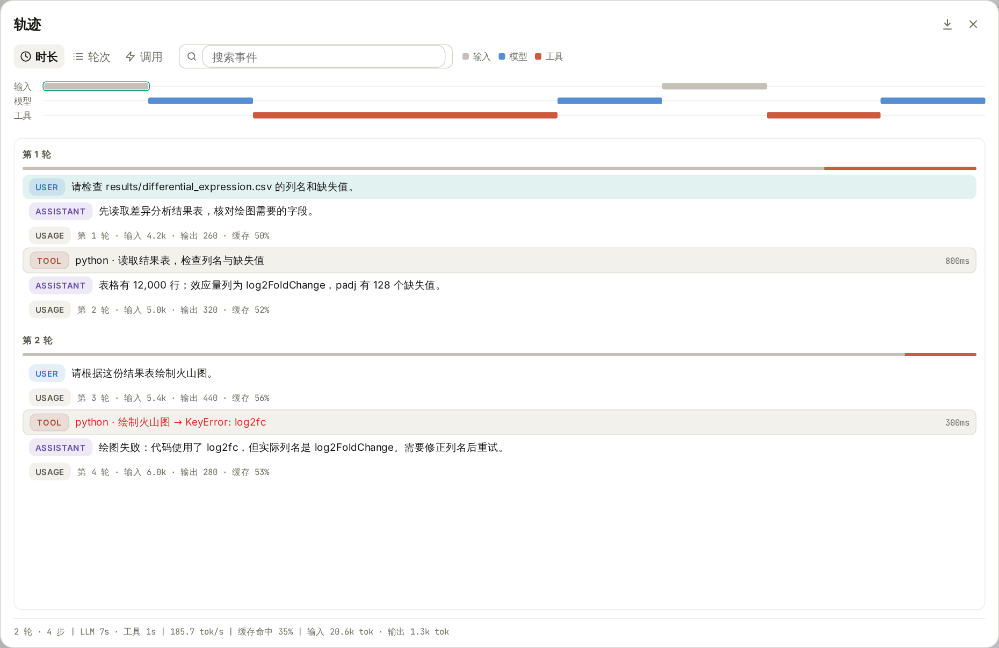
图 1：演示会话分为两轮，先检查数据，再尝试绘图。关闭右侧详情后，可以更宽地浏览事件列表。
常见记录可以这样读：
| 记录 |
表示什么 |
适合核对什么 |
| USER／用户 |
你发送的任务要求 |
当时指定了哪个文件、哪些条件 |
| ASSISTANT／助手 |
模型给出的回复 |
它如何解释结果、准备怎样继续 |
| TOOL／工具 |
一次工具调用及其返回结果 |
实际参数、代码、输出与报错 |
| USAGE／用量 |
一次模型调用的用量记录 |
输入、输出和缓存 Token |
一轮对话中，模型可能多次调用工具、读取结果，再继续处理，所以同一轮下面出现多条工具和用量记录很正常。列表较窄时，记录类型会以小图标显示；展开列表后，可以看到文字标记。
打开轨迹，不需要额外配置。
进入一段对话，点击顶部工具栏中的 轨迹 图标，位置在分享按钮与收件箱铃铛之间。也可以在输入框输入 /trajectory 并发送，打开同一个窗口。
第一次使用时，建议等一个小任务完成后再打开，这样比较容易把任务要求与执行记录对应起来。新会话还没有消息时，会显示“暂无轨迹”。
窗口可以分成四块来看：
- 顶部时间线：按输入、模型和工具展示过程，可切换“时长”“轮次”“调用”刻度。
- 左侧事件列表：按轮次浏览每一步，已完成的工具调用会显示耗时，失败调用用红色突出显示。
- 右侧详情：点击一条记录，查看它的内容。
- 底部统计：查看整个会话的轮数、步数、模型与工具耗时，以及 Token 用量等。
点击时间线中的一段，也可以定位到对应事件，并把它滚动到列表上方。只想浏览列表时，点击右侧详情区域的关闭按钮即可；再次点击事件，详情会重新打开。按 Escape 或点击整个窗口右上角的关闭按钮，就会返回原来的对话。
第一个用途：核对 AI 实际用了什么文件和参数。
在演示会话中，第一条要求是：
请检查 results/differential_expression.csv 的列名和缺失值。
Wisp 随后调用 Python 读取表格。点击这条工具记录，再切换到右侧的 预览，就能看到“参数”和“结果”。
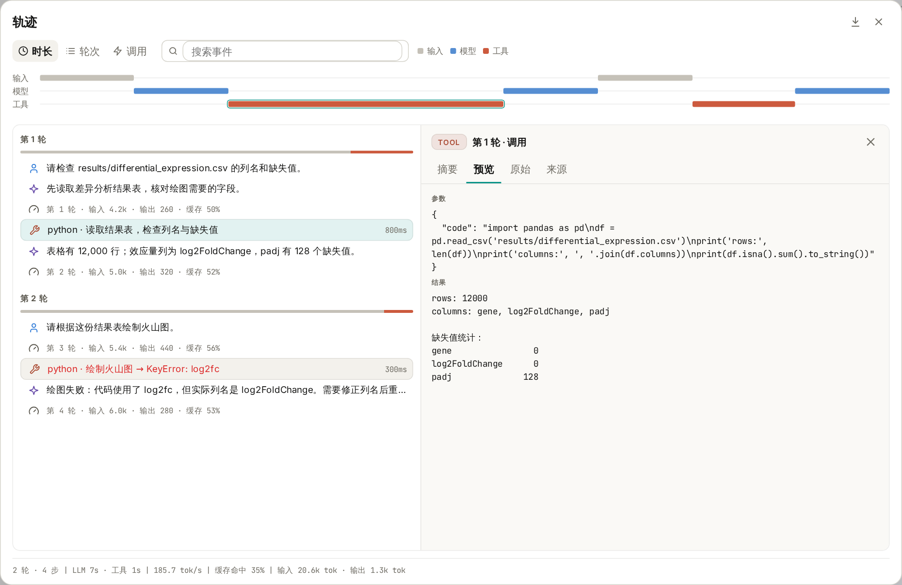
图 2：左边选择一次 Python 调用，右边查看提交给工具的代码和工具返回的内容。较长的内容可以在详情区域内滚动阅读。
这里最值得核对的，是任务要求与实际操作是否一致：读取路径是否正确，使用了哪些列，有没有过滤数据，以及输出是否支持助手的描述。
例如，演示结果表的列名是 gene、log2FoldChange 和 padj，其中 padj 有 128 个缺失值。后续绘图时，就可以继续检查代码有没有处理这些缺失值，效应量列有没有选对。
同样的方法也适用于文献检索：查看工具实际提交的检索词和返回记录，再核对助手整理的论文是否来自这些结果。使用 Skill 时，也可以查找相关工具调用，确认这次任务是否读取了对应的技能说明。
右侧还有几个标签，不必第一次就全部使用：
| 标签 |
主要内容 |
| 摘要 |
记录来源、状态、耗时与简短预览；用量事件还会显示模型和 Token 信息 |
| 预览 |
消息全文，或工具的完整参数与结果 |
| 原始 |
当前事件的 JSON 数据，适合需要检查具体字段时使用 |
| 来源 |
原始消息文本、工具参数或用量记录等来源内容 |
对多数科研用户来说，先用“摘要”了解状态，再用“预览”核对内容，就可以完成常见检查。
第二个用途：报错时，找到出问题的那一步。
演示中的第二轮要求绘制火山图，但绘图代码使用了 log2fc。结果表实际提供的是 log2FoldChange，于是工具返回 KeyError: 'log2fc'。
打开轨迹，点击红色的工具记录，就能同时看到出错代码和返回结果。记录较多时，可以在顶部“搜索事件”中输入 log2fc，缩小范围。
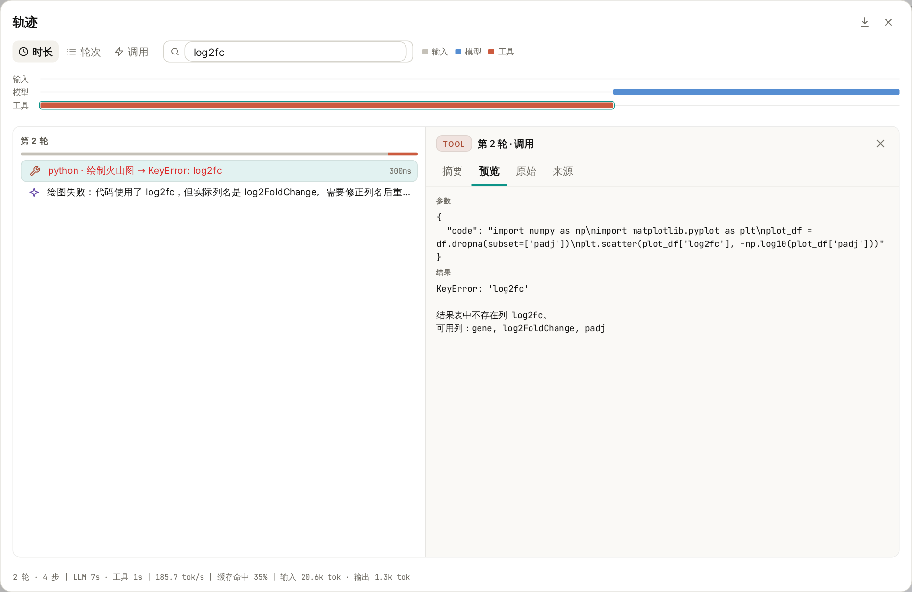
图 3：搜索会匹配事件摘要及详细内容。这个例子中，错误来自代码引用了不存在的列名。
看清原因后，可以回到对话继续提出具体要求：
刚才的绘图调用使用了 log2fc，但表格里的列名是 log2FoldChange。请先确认列名，修正后重新运行，并说明缺失值和零值如何处理。成功后告诉我图和脚本保存在哪里。
这样，后续处理就有了明确依据。重试后再打开轨迹，还可以检查新的调用是否成功、修改是否落实，以及输出是否符合预期。
排查其他问题时也可以从实际报错入手：文件不存在就核对路径，缺少依赖就核对运行环境，检索失败就查看工具返回的信息。搜索文件名、工具名或错误关键词，通常比从头翻阅整段对话更方便。
第三个用途：了解一次任务的耗时和用量。
有时任务没有报错，但等待时间很长。轨迹顶部的时间线与底部统计，可以帮助你初步判断时间主要花在模型响应还是工具执行上，再定位到具体调用。
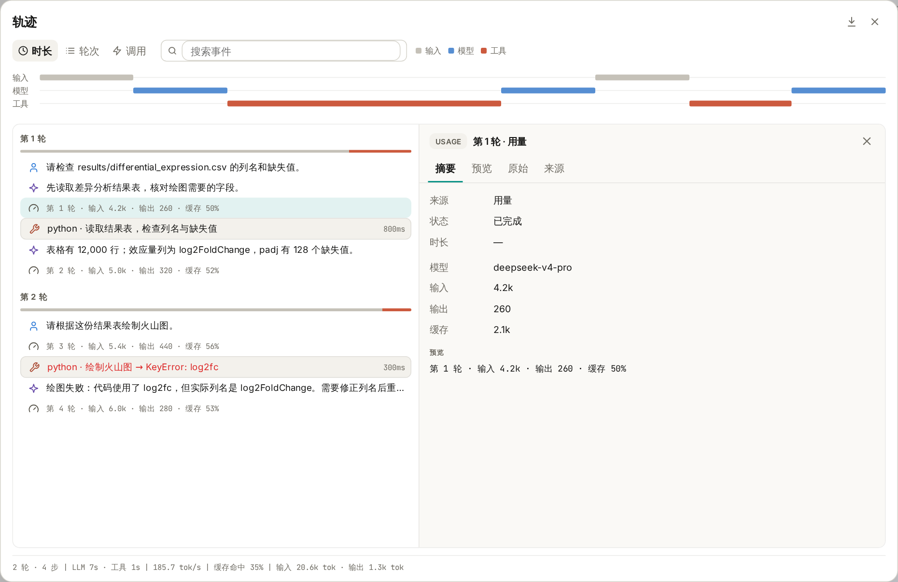
图 4：右侧显示选中那次模型调用的用量；底部汇总整个会话。图中数字仅为演示。
Token 可以粗略理解为模型处理文本等内容时使用的计量单位。用量记录会展示输入、输出和缓存信息；底部还汇总模型与工具耗时、输出速度和缓存命中率等。
这些信息适合辅助复盘，例如观察长文档输入、反复重试或多次工具调用带来的用量变化。实际费用仍要结合所用服务商的计价方式核对，不能仅凭一个 Token 总数直接换算。
运行中的轨迹会先展示即时记录，任务结束后再以已保存的记录更新。旧会话如果缺少时间或用量信息，相应指标可能无法显示，不能把缺失值理解成“没有耗时”或“没有消耗”。
需要留档或与同事复盘，可以导出 HTML。
点击轨迹窗口右上角的下载图标，也就是 导出 HTML，选择保存位置，即可得到一个独立的 HTML 文件，用浏览器打开阅读。
导出内容包括会话标识、模型、汇总统计、时间线，以及各轮的用户输入、助手回复、工具参数与结果、状态、耗时和用量记录。它适合与分析笔记一起归档，也方便同事了解你是怎样得到结果、在哪一步遇到了问题。
有两个细节很实用：
- 搜索不会缩小导出范围。 即使界面中只筛出了
log2fc 相关记录，导出的仍是整个会话已保存的轨迹。
- 导出以已保存记录为准。 如果任务还在运行，尚未保存的即时内容可能不在文件中；需要完整留档时，等任务结束后再导出。
轨迹能帮助检查和追溯过程。要复现一次分析，还需要一起保留输入数据或来源、脚本、参数和运行环境；HTML 本身不会把这些文件全部打包，也不会自动重跑任务。分享前，可以检查其中完整的输入、路径和工具结果是否适合提供给对方。
第一次尝试，可以用一份熟悉的小表格。
在项目中准备一个 CSV 文件，发送下面这条要求，并把路径换成自己的文件：
请检查 data/example.csv，报告行数、列名和各列缺失值。先不要修改原文件；如果读取失败，请说明实际报错。
完成后打开轨迹，找到读取文件的工具调用，切换到“预览”，把参数、结果和最后的回答对照起来，再试着搜索文件名、导出 HTML。
熟悉这几个操作后，轨迹就可以成为日常分析的一部分：拿到结果时核对依据，遇到报错时查找原因，任务完成后保留过程，下一次接着做时也有记录可查。
功能细节参见 Wisp 轨迹文档。本文依据撰写时的项目实现整理，不同版本的界面文字可能略有差异。
返回教程目录